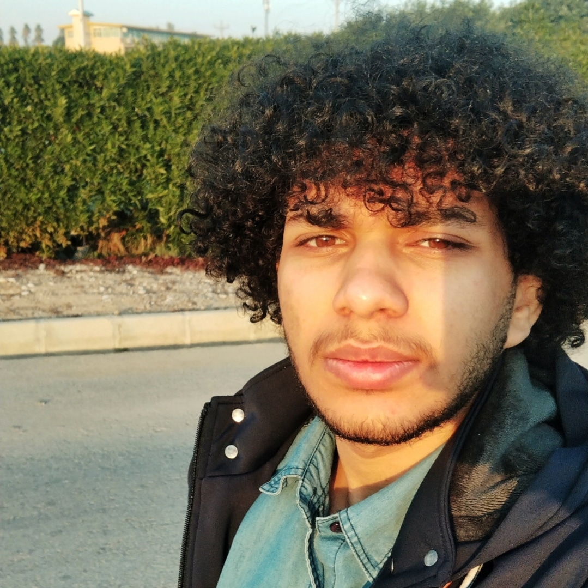

سلام، من
ابوالفضل معاونی
|
تخصصهای من
مهارتهای حرفهای
توسعه وب و اپلیکیشن
HTML/CSS Tailwind
JavaScript TypeScript React (مقدماتی) React Native Expo PHP
FastAPI
پایگاه داده
MySQL MSSQL T-SQL NoSQL (redis)
شبکه
Network+ Cisco PT Routing
Wireshark (مقدماتی)
طراحی گرافیکی
Photoshop MS Word MS PowerPoint MS Excel Figma (مقدماتی)
Typography
هوش مصنوعی
OpenCV OCR NLP
LangChain LLM LlamaIndex
توسعه اپلیکیشن دسکتاپ
C# WFA C++
Qt
افتخارات من
پروژههای برجسته
سامانه مدیریت رویدادهای دانشگاهی
طراحی UI در Figma + پیادهسازی با PHP با رعایت امنیت (SQL Injection prevention)
Figma PHP MySQL
مشاهده جزئیات
اپلیکیشن OCR هوشمند
تبدیل دستنویس به کد اجرایی با استفاده از FastAPI و مدلهای Gemini، GPT، Tesseract، PaddleOCR
Python FastAPI OpenCV
LLM
مشاهده جزئیات
طراحی گرافیکی حرفهای
بنر، پوستر، بروشور چاپی و وب - دارای نمونه تایپوگرافی و ویراستاری متون
Photoshop MS Word MS PowerPoint Photoshop Typography
Print Design
مشاهده نمونهکارها
تحصیلات
کارشناسی مهندسی کامپیوتر | گرایش نرمافزار
دانشگاه صنعتی جندی شاپور | ۱۴۰۰ - ۱۴۰۵
معدل: ۱۴.۷ از ۲۰گواهیها
- Network+ (فرادرس - عباس ولیزاده)
- NLP و LLM (در حال یادگیری)